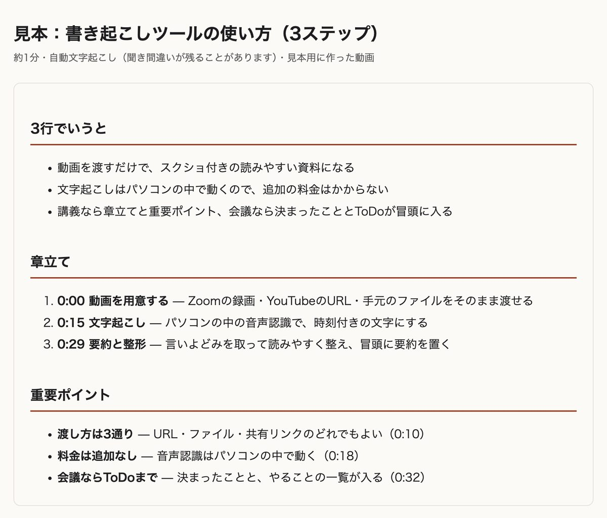
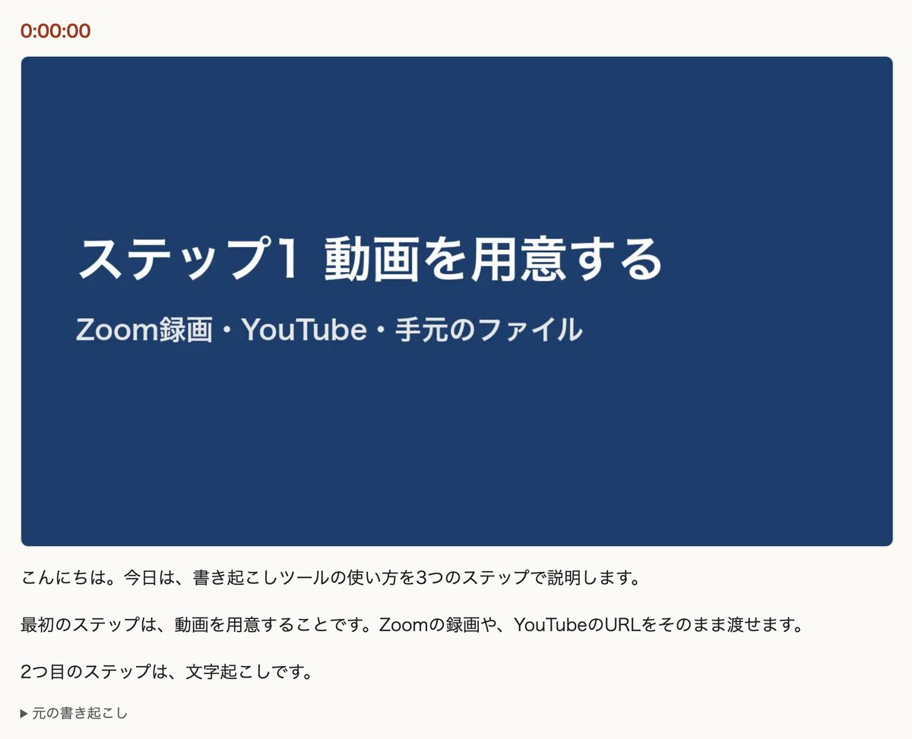

YCS 会員向け Claude Code 用スキル
セミナー・講座・会議の動画を、スクリーンショット付きの読みやすい資料にします。動画の URL かファイルを Claude Code に渡して「ととのう書き起こし」と頼むだけです。
バージョン {{VERSION}}（{{UPDATED}} 更新）。ダウンロードしなくても、下の「準備」の文を Claude Code に貼れば入ります。
動画 1 本を、あとで読み返せる 1 枚の HTML ファイルにします。ブラウザで開くだけで読めます。


文字起こしはパソコンの中で動くので、外部の有料サービスは使いません。要約と整形は Claude が行います。
このスキルは、自分のパソコンの中で動画を処理するので、パソコンの上で動く Claude Code で使います。デスクトップアプリの Code タブでも、ターミナルでも、できることは同じです。パソコンの種類と、Claude を使う場所ごとの対応は次のとおりです。
| パソコン | Claude Code （デスクトップアプリの Code タブ・ターミナル） | Cowork （作業を丸ごと任せるモード） | Web 版 claude.ai・スマホ |
|---|---|---|---|
| M系 Mac （M1〜） |
○おすすめ。文字起こしが速い | ×使えません。Cowork の作業はクラウド上で動き、文字起こしモデルや YouTube からの取得が止められているため | ×使えません。アップロードは 1 ファイル 30MB までで、動画も完成した HTML も入りきらないため |
| Intel Mac | △使えます。文字起こしに時間がかかります（macOS 13 以降） | ||
| Windows （10 / 11） |
△使えます。文字起こしに時間がかかります。準備するソフトが少し多め |
○ そのまま使える △ 使えるが条件あり × 使えない。Windows on ARM（Snapdragon 搭載機など）は、文字起こしの部品が対応していないため使えません。
| パソコン | 1時間半の動画の文字起こし | はじめの準備 |
|---|---|---|
| M系 Mac | 3〜10分ほど | 30分ほど |
| Intel Mac | 30分〜1時間半ほど（パソコンの性能しだい） | 30〜40分ほど |
| Windows | 30分〜1時間半ほど（パソコンの性能しだい） | 30〜40分ほど |
どのパソコンでも仕上がりの質は同じです。違うのは文字起こしにかかる時間だけです。
M系 Mac は、Mac に入っている計算用のチップを使う「mlx-whisper」で文字起こしをします。Intel Mac と Windows は、パソコンの頭脳（CPU）だけで計算する「faster-whisper」を使うため時間がかかります。どちらも同じ音声認識モデル（large-v3-turbo）です。
参考：作者の Mac（M5 Pro）で 10 分の音声を文字起こしすると、mlx-whisper で 18 秒、faster-whisper で約 2 分でした。一般的な Windows のノートパソコンや Intel Mac では、faster-whisper がこの数倍かかる見込みです。
Windows 版は、作者の手元の Windows 実機ではまだ通しで試していません。うまく動かないときは、表示されたメッセージ（画面の写真でも可）を添えて、YCS の運営窓口までお知らせください。
Mac：画面左上のりんごマーク →「この Mac について」。「チップ」に Apple M1・M2・M3・M4・M5 などとあれば M系 Mac、「プロセッサ」に Intel とあれば Intel Mac です。
Windows：スタート →「設定」→「システム」→「バージョン情報」。「システムの種類」が「64 ビット オペレーティング システム、x64 ベース プロセッサ」なら使えます。「ARM ベース プロセッサ」の場合は使えません。
自分のパソコンを選ぶと、手順がそのパソコン用に切り替わります。
Claude の有料プラン（Pro 以上）で使えます。Claude のデスクトップアプリを入れて、「Code」タブを開きます。作業するフォルダを聞かれたら、ホームフォルダ（自分の名前のフォルダ）や「書類」などを選べば大丈夫です。実行する場所を選ぶ画面が出たら、クラウドではなくこのパソコン（ローカル）を選びます。
すでにターミナルで Claude Code を使っている人は、そのままで構いません。
Intel Mac は macOS 13 以降が必要です。
Claude Code に次の文をそのまま貼って送ります。ダウンロードから置き場所への配置まで Claude がやってくれます。
Claude Code に貼る文
https://totonou-kakiokoshi.pages.dev/totonou-kakiokoshi.zip をダウンロードして展開し、中の totonou-kakiokoshi フォルダを、ホームフォルダの .claude/skills/ の中に入れてください（フォルダがなければ作り、前の版があれば置き換えてください）。終わったら、ととのう書き起こしの環境チェックをして、足りないものがあれば教えてください。
途中で「このコマンドを実行してよいか」と聞かれます。ここでは、ファイルのダウンロード（curl）、展開（unzip）、フォルダの作成（mkdir）、コピー（cp・mv）、環境チェック（check_env.py）といった内容なので、許可して大丈夫です。見慣れないもの（ファイルの削除など）が出たら、許可する前に「これは何？」と聞けば説明してくれます。
~/.claude/skills と入力して開きます（なければ、ホームフォルダで Command + Shift + . を押して隠しフォルダを表示し、.claude の中に skills フォルダを作ります）%USERPROFILE%\.claude\skills と入力して開きます（なければ .claude の中に skills フォルダを作ります）totonou-kakiokoshi フォルダを、その skills フォルダに入れます。skills/totonou-kakiokoshi/SKILL.md がある形になれば OK ですclaude plugin marketplace add yokoyamactw-max/totonou-kakiokoshi
claude plugin install totonou-kakiokoshi@yokoyama-skills
この方法で入れた場合、コマンドで確実に呼ぶときは /totonou-kakiokoshi:totonou-kakiokoshi です。Windows では先に Git for Windows（winget install --id Git.Git -e）を入れておくと安心です。
Mac にソフトを入れるには「Homebrew」という道具を使います。2 の環境チェックで Homebrew が足りないと言われたときだけ、先に次をやります（言われなければ飛ばして、下の文を送ります）。
ターミナルに貼る（Homebrew がないときだけ）
/bin/bash -c "$(curl -fsSL https://raw.githubusercontent.com/Homebrew/install/HEAD/install.sh)"
Claude Code に戻り、「Homebrew を入れました」と添えて、次の文を送ります（Homebrew を使えるようにする最後の設定も Claude がやります）。
Claude Code に次の文を送ると、足りないソフトを winget（Windows に入っているソフトの導入ツール）で入れてくれます。途中で「このアプリがデバイスに変更を加えることを許可しますか？」と出たら「はい」を押します。
Claude Code に貼る文
ととのう書き起こしの準備をしてください。足りないソフトがあれば、入れてよいか私に確認してから入れてください。文字起こし用の専用環境が必要なら、それも用意してください。
M系 Mac では、ffmpeg・yt-dlp・numpy と、文字起こしの mlx-whisper が入ります（名前は覚えなくて大丈夫です）。文字起こしモデル（約 1.6GB）は、初めて書き起こすときに自動でダウンロードされます。
Intel Mac では、ffmpeg・yt-dlp・numpy が入り（名前は覚えなくて大丈夫です）、そのあと文字起こし用の専用環境（faster-whisper）とモデル（約 1.6GB）を用意します。10〜20 分ほどかかります。
Windows では、Python・Visual C++ ランタイム・yt-dlp（ffmpeg も一緒に入ります。名前は覚えなくて大丈夫です）を入れたあと、一度 Claude のアプリを終了して開き直すよう案内されます。開き直したら、左の一覧から同じ会話を開いて「続きをお願いします」と送ります。そのあと numpy と文字起こし用の専用環境（faster-whisper）・モデル（約 1.6GB）を用意します。10〜20 分ほどかかります。
ターミナル
brew install python ffmpeg yt-dlp numpy pipx
pipx install mlx-whisper && pipx ensurepath
終わったらターミナルと Claude Code を開き直します。
ターミナル
brew install python ffmpeg yt-dlp numpy
python3 ~/.claude/skills/totonou-kakiokoshi/scripts/check_env.py --setup
PowerShell（スタートメニューで「PowerShell」と検索）
winget install --id Python.Python.3.12 -e winget install --id Microsoft.VCRedist.2015+.x64 -e winget install --id yt-dlp.yt-dlp -e
PowerShell を閉じて開き直してから：
python -m pip install numpy python $HOME\.claude\skills\totonou-kakiokoshi\scripts\check_env.py --setup
ffmpeg が見つからないと言われたら winget install --id Gyan.FFmpeg -e も入れます。
Claude Code に貼る文
ととのう書き起こしの環境チェックをして
「OK: 必要なソフトはすべてそろっています」と出れば準備完了です。NG のときは、足りないものと入れ方が表示されるので、そのまま Claude に「入れて」と頼めます。
Claude Code に「ととのう書き起こし」と書いて、動画の URL かファイルを渡します。
頼み方の例：URL
ととのう書き起こしで、この動画を資料にして https://www.youtube.com/watch?v=xxxxxxxx
頼み方の例：パソコン内のファイル（会議）
ダウンロードフォルダの「定例会議.mp4」をととのう書き起こしで。自分の会議なので ToDo も出して
頼み方の例：一部区間だけ
この動画の 23:00〜25:40 だけ、ととのう書き起こしで https://www.loom.com/share/xxxxxxxx
「HTMLで書き起こして」「スクショ付きで書き起こして」でも動きます。確実に呼びたいときは /totonou-kakiokoshi と打ってから続けます。
待っている間は、他の作業をしていて構いません。ただし次の 2 つに気をつけます。
| もの | 場所（保存先を指定しなかったとき） |
|---|---|
| 完成した HTML | 「書類」フォルダの中の ととのう書き起こし「ドキュメント」フォルダの中の ととのう書き起こし |
| 作業用のファイル | 「ムービー」フォルダの中の totonou-kakiokoshi「ビデオ」フォルダの中の totonou-kakiokoshi。取り込んだ動画などが残ります。不要になったら Claude に「ととのう書き起こしの作業フォルダを消して」と頼めます |
| 素材 | 渡し方 |
|---|---|
| YouTube・Loom・Vimeo | ページの URL をそのまま渡します。ログインしないと見られない動画は取り込めません。その場合は、ダウンロードボタンがあれば保存してファイルで渡し、なければ主催者に動画ファイルをもらえるか相談します |
| Zoom のクラウド録画 | 外から取り込めないので、録画ページの「ダウンロード」で保存してから、ファイルとして渡します |
| Google Drive | 共有を「リンクを知っている全員」にして、そのリンクを渡します。終わったら共有を元に戻します |
| UTAGE の講座ページ | ページの URL を渡します。Claude がブラウザを操作できる拡張機能（Claude in Chrome）を入れていれば、ページ内の動画を探して取り込みます。入れていない場合は、Claude が別の方法（ページを保存してもらう等）を案内します |
| パソコン内のファイル | mp4・mov・m4a など。「ダウンロードフォルダの〇〇.mp4」のように名前と場所を伝えれば探してくれます。確実に伝えたいときは、Finder でファイルを選んで Option を押しながら右クリック →「パス名をコピー」で貼ります確実に伝えたいときは、エクスプローラーでファイルを右クリック →「パスのコピー」（Windows 10 は Shift を押しながら右クリック →「パスとしてコピー」）で貼ります |
| 音声だけ | m4a・mp3 など。スクショのない、文章だけの資料になります |
Obsidian を使っている人は、保存先を Obsidian の保管庫（Vault）の中にすると、目次ノートも作れます。
頼み方の例
ととのう書き起こしで、保存先は Obsidian の保管庫の「書き起こし」フォルダにして。目次ノートも作って
一覧表がほしいときは「書き起こし一覧の表も入れて」と頼むと、目次ノートを新しい順・シリーズ別に並べる表（Obsidian の「Bases」機能）を置いてくれます。
| 項目 | 目安 |
|---|---|
| 全体の時間 （1時間半のセミナー） | M系 Mac：20〜30分ほど（取り込み・文字起こし・要約と整形を合わせて） Intel Mac・Windows：1〜2時間ほど（文字起こしの待ち時間が長いため） 初回だけ、文字起こしモデル（約 1.6GB）のダウンロードで 10〜20 分ほど長くかかります |
| 文字起こしの料金 | 無料。パソコンの中で動きます |
| 要約・整形 | Claude のプランの利用枠を使います。1時間半のセミナー 1 本で、長い文章の要約を何回か頼むくらいの量です。長い動画を続けて何本も処理すると、プランの利用上限に達することがあります。その場合は、上限が戻るまで時間をおいてから続きを頼みます |
| パソコンの空き容量 | 文字起こしモデル 約 1.6GB（初回だけ）＋ 作業用に動画 1 本あたり 1GB ほど |
| 完成した HTML | 1時間半の講義で 30〜40MB ほど（画面を埋め込むため）。メール添付には大きいサイズです |
Claude Code で新しい会話を始めてから、もう一度頼みます。それでもだめなら /totonou-kakiokoshi と打ってみます。スキルの置き場所が正しいか（.claude/skills/totonou-kakiokoshi/SKILL.md があるか）を Claude に確かめてもらうこともできます。
入れたソフトは、Claude Code（やターミナル）を閉じて開き直すまで見つからないことがあります。アプリを一度終了して開き直してから、もう一度チェックします。
Windows では python（それでもだめなら py）で呼びます。Claude に「Windows なので python で実行して」と伝えれば切り替えます。
回線の問題が多いので、もう一度実行すれば続きから進みます。会社のネットワークでは、モデルの配布元（huggingface.co）が止められていることがあります。自宅の回線で試してください。Windows で「ctranslate2 が読み込めません」と出たら、Visual C++ ランタイム（winget install --id Microsoft.VCRedist.2015+.x64 -e）を入れてから、もう一度実行します。
Intel Mac と Windows は CPU で計算するため時間がかかります。ほかのアプリを閉じ、電源につないでおきます。まず「最初の 10 分だけ」のように一部区間で試すと、全体の時間の見当がつきます。
ログインが必要なページや、限定公開の設定によっては取り込めません。動画を保存して、ファイルとして渡してください。
「〇〇は△△の聞き間違いなので、全体を直して HTML を作り直して」と頼めば直します。スライドに正しい表記が映っていれば、それも手がかりにします。
使えません。どちらもクラウド上で動くため、大きな動画や文字起こしモデルを扱えません。パソコンの Claude Code（デスクトップアプリの Code タブかターミナル）で使ってください。
自分の会議など、共有してよい内容なら、Google Drive などに置いてリンクを送るのが手軽です（メール添付には大きいため）。他人の講座の書き起こしは共有しないでください。
このページのバージョン表示が新しくなっていたら、「準備」の 2 と同じ文を Claude Code に貼れば置き換わります（固定のダウンロード先は、いつも最新版です）。GitHub から入れた人は次の 2 つです。
claude plugin marketplace update yokoyama-skills claude plugin update totonou-kakiokoshi@yokoyama-skills
Claude Code に貼る文
ととのう書き起こしを削除してください。スキルのフォルダ（~/.claude/skills/totonou-kakiokoshi）、専用環境（~/.totonou-kakiokoshi）、文字起こしモデル（~/.cache/huggingface の中の whisper-large-v3-turbo）を、消す前に一覧で見せてから消してください。作業フォルダと完成した HTML は残してください。
全文は LICENSE をご覧ください。